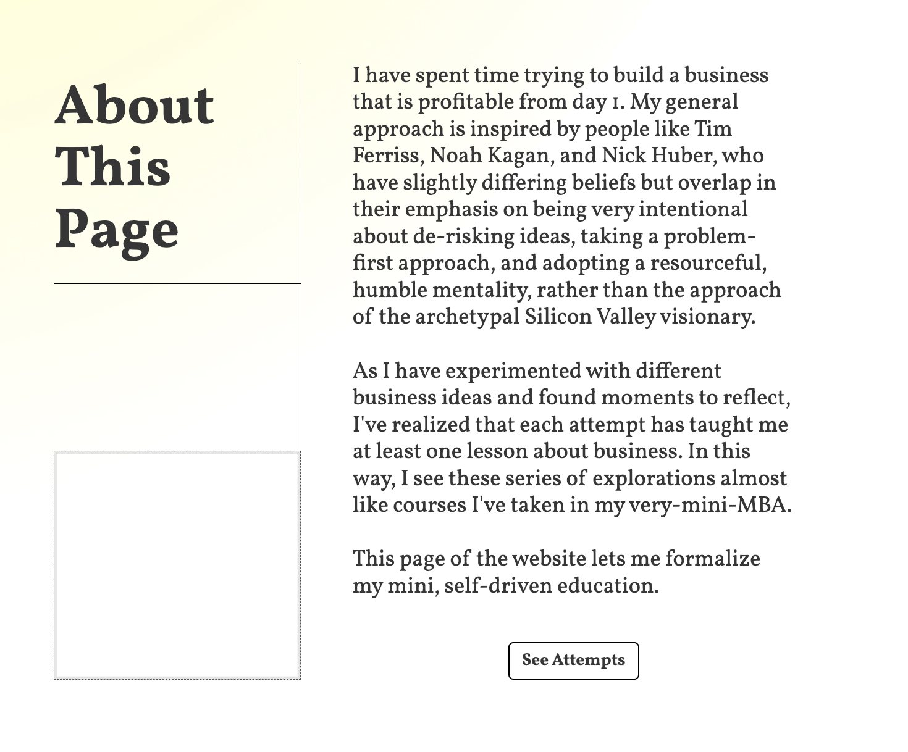
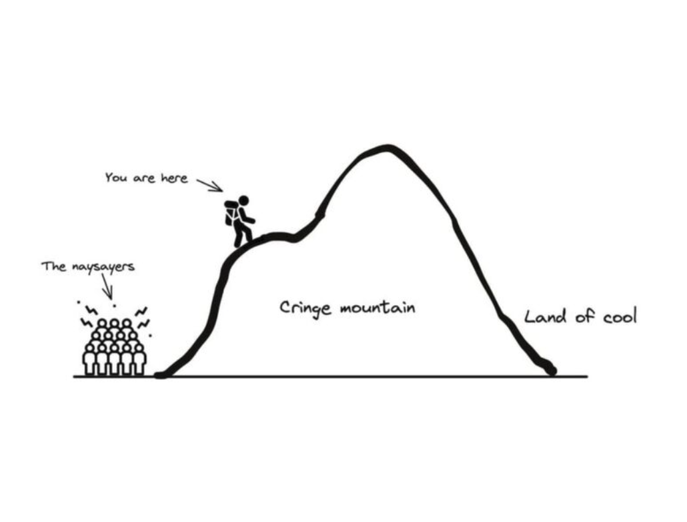
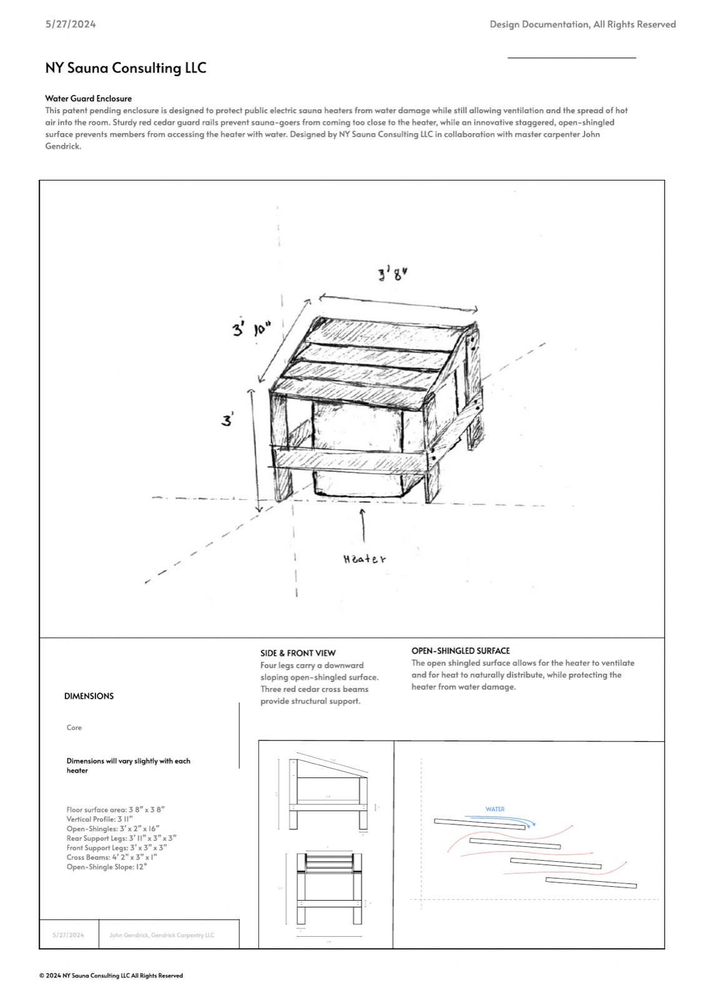
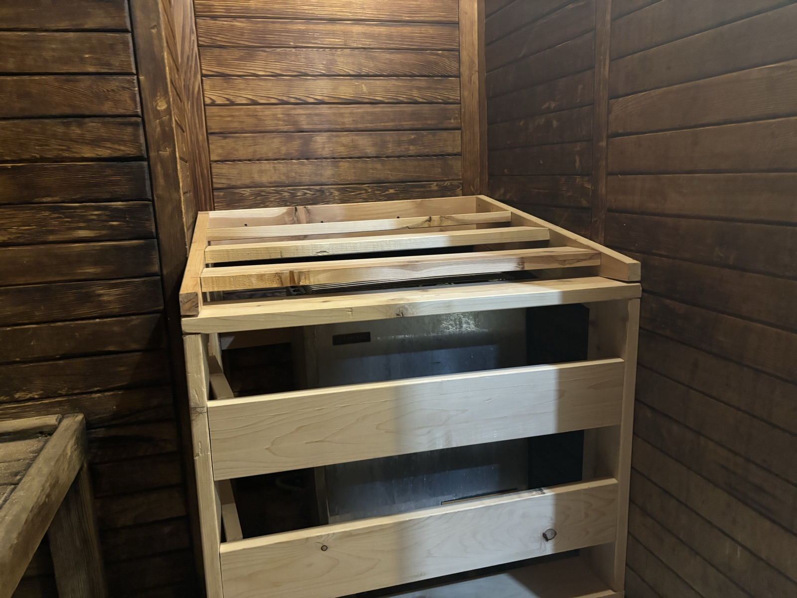
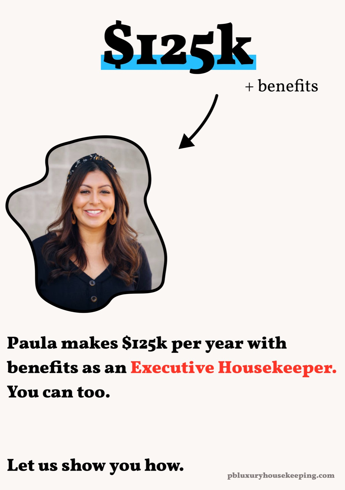
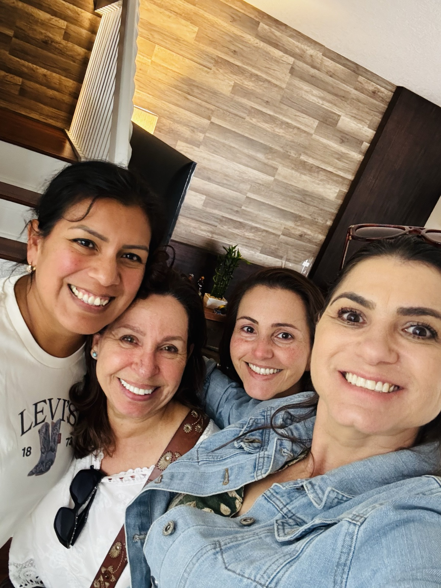
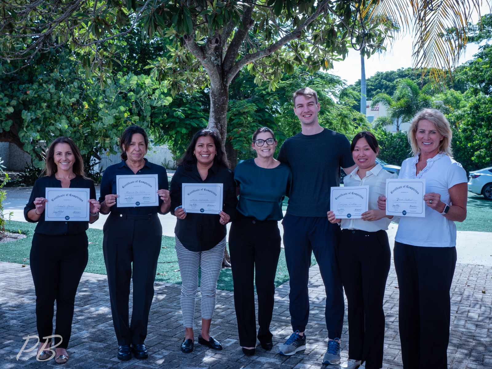
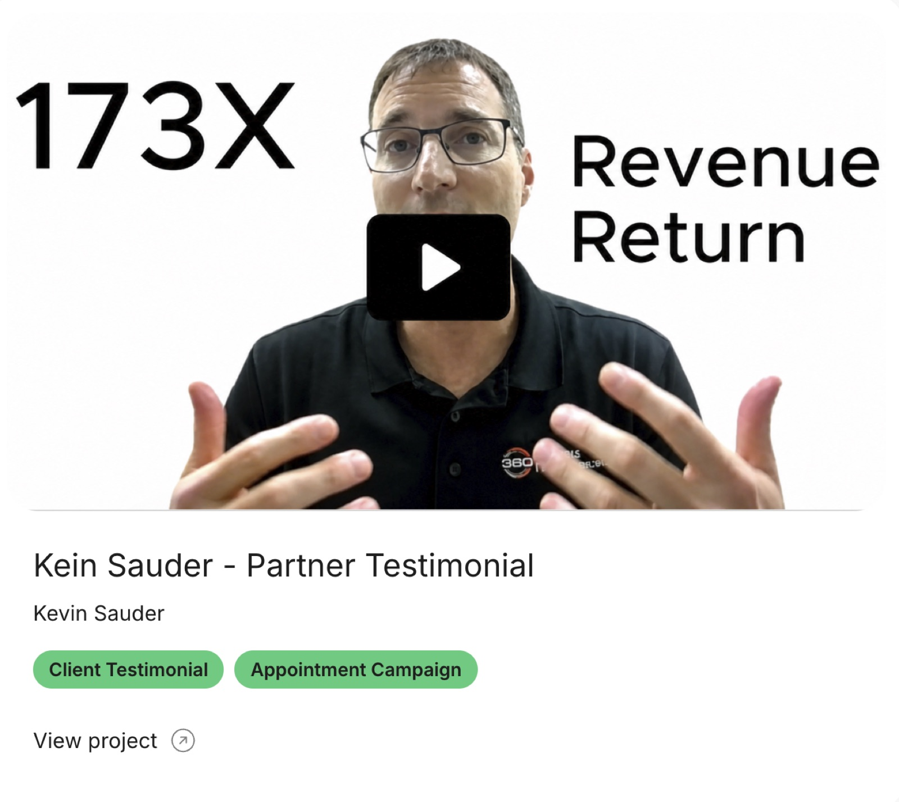
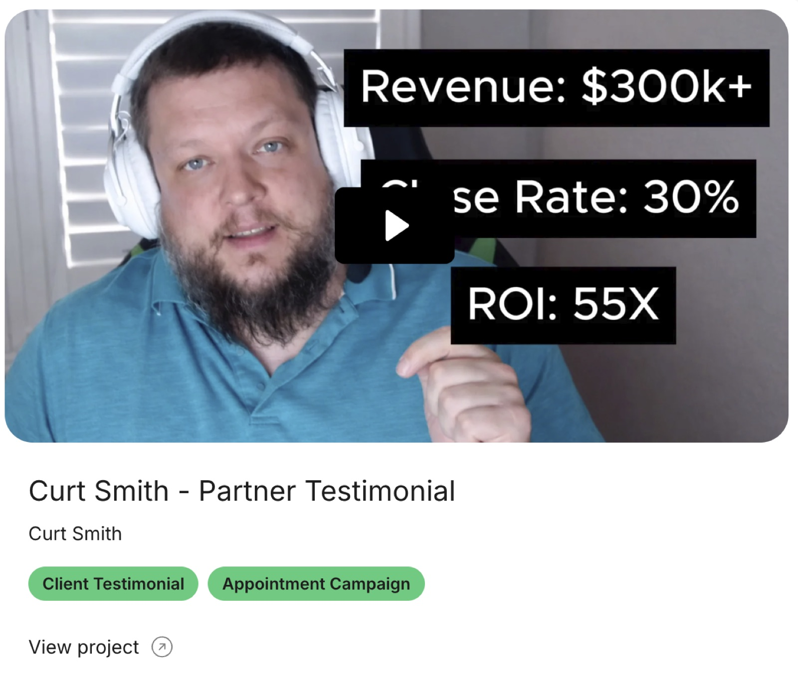
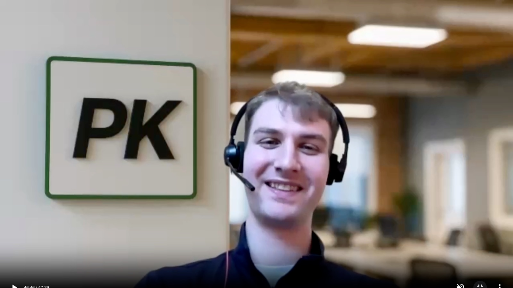

In 2024, I set out to teach myself business by trying to build one. I gave myself the summer to take a project from concept to revenue and learn as much as I could along the way. I labeled this my self-driven MBA.
My strategy was to get as many reps as possible in a short amount of time, passing ideas through aggressive tests to see if there was real demand and scale. I set tight deadlines to go from idea through validating demand and earning revenue in days, not months, and formalized my learnings in post-mortems after each attempt.
By the end of the summer, one of the ideas caught real traction, and I grew it to a $350k run rate business, with 18 clients and 6 team members over the course of two years. This is the story of the rejections, relationships, wins, and learnings along the way.
“I see these series of explorations almost like courses I’ve taken in my very-mini-MBA”
May 2024


My Approach
The approach I took to business-building was to notice problems, size the potential demand, ideate a solution, prototype, and present it to real customers and try to sell it as fast as possible. If a project withstood all of these stages, I considered this a business that I could potentially scale. I followed this process for four ideas: An accessory to a best selling baby-chair, a sauna facilities product, a course teaching luxury housekeeping, and a lead generation agency.
An accessory for a best-selling baby chair
My first idea was to build an accessory to a best-selling baby chair, called the Inglesina Fast-Clip Baby Chair. Building an accessory to an already beloved product was a strategy I had heard about to build a successful business without the risk of having to create something new.

Baby Chair: Finding Friction
To get ideas for an accessory, I started by combing reddit threads and online reviews. I read that people loved the convenience of the chair– that they could move their little ones from room to room, or to restaurants without having to lug a big chair– but were complained that their kids were then stuck in the chair and bored. In my research I also came across a snap-on tray that allowed kids to eat in the chair, and this triggered an idea: A snap-on tray with built in art features that allowed kids to be entertained and have their brains developed in the chair. I created an AI image of my product, and hit the streets to gather market data and see whether there was interest in my product. I got a lot of pats on the back– “you’re on to something man!”-- and recorded that 50% of people with strollers owned an Inglesina Fast Clip Baby chair. With 3.6M babies born every year, 50% of those owning the chair, 10% of those interested in my idea, and 50% of that market capturable, I estimated this as a $1.8M ARR business. Enough to get out the hot glue and build a prototype.

Baby Chair: Testing Demand and First Pivot
Confused, impatient, embarrassed looks– I got a lot of those as I hawked down baby-sitters and moms with strollers on the west side highway of Manhattan. My goal was to show people my physical prototype, get feedback, and score a first sale. Although I got some more pats on the back, when I asked for people to pay $20 for the prototype, everyone awkwardly declined. I also learned about more risks to the idea: that kids young enough to sit in the chair were not developed enough to care about art, and that it was dangerous because they’d likely try to eat the art materials. One person suggested the idea of a busy board, a collection of fixed, tactile things to play with, so I pivoted to that and got back out there. This also failed to land. Ultimately, I invalidated the idea mostly due to insufficient demand.
Baby Chair: The Challenge with Consumer Products
This was a first exposure to the difficulty of building consumer products. I learned that identifying problems consumers are willing to pay for is hard. In hindsight, even if there was demand for my idea, the market for Inglesina accessories was already flooded by low-cost Chinese manufacturers who would pose tough competition. I started looking for problems that could be more easily defined in dollars, and where the clients were businesses, which I learned are more willing to spend money on things.
Sauna Guard
During the summer of 2024, I used my gym’s sauna daily. One to two times per week, the sauna would be out of commission. The reason was because people kept pouring water on the electric sauna heater to generate steam. The maintenance guy was showing up all the time and management was frustrated. I saw this as an opportunity to help a business save money.
Sauna Guard
My next step, to check that my gym wasn't a one-off and estimate the market size, was to call every gym in Manhattan, recording how many had electric saunas and how many had the problem. I learned that 70% of gyms had saunas and 50% of gyms with saunas experienced this same problem– with 113k gyms in the US I sized this TAM at $20M.
Sauna Guard: Prototype and Selling
The prototype, in this case, was a design sketch of a protective sauna heater enclosure meant to read like a professional contractor doc. With this in hand, I sought out meetings with all the gym managers in New York City via phone and email. I pitched an 800% ROI for gyms and one day installation. Eventually, someone bit, and I sold the enclosure for $1000 to one location of a major gym franchise. Scoring real revenue for the first time was a big milestone. Unfortunately, I didn’t predict the bumps in the road that came next.

Sauna Guard: Scaling Issues and Invalidation
I had contracted with a carpenter to do the build, but on delivery day, everything went wrong: The carpenter didn’t show up, the gym was frustrated by the delay, and the last minute replacement carpenter built the design completely incorrectly. I sat down on the sidewalk, head in hands. The enclosure was successfully rebuilt the next day, but the issues with scaling this business were painfully clear to me. The thought of contracting hundreds of carpenters across the country and dealing with liability risk of a product involving wood next to hot metal, all on top of 20% gross margins and little meaningful differentiation didn’t get me excited. I killed the business, took the learnings, and sought out an idea with simpler distribution and one where I could build a brand to differentiate from competitors.

Palm Beach Luxury Housekeeping Course
I came across a viral article that reported that Palm Beach luxury housekeepers were earning $150k a year due to a shortage of supply. This story was reported by Business Insider, Fortune, NY Post, CNBC, and many others. I interpreted this as a strong demand signal and shortcut to validating demand. Many of the articles quoted the leader of the most prestigious housekeeper agency in Florida, named April Berube, who mentioned that she thought a course was the best solution to increase the supply of skilled labor. I had confirmed demand and had what was likely a good solution, so I got to work building the landing page for the Palm Beach Luxury Housekeeping Course.
Palm Beach Luxury Housekeeping Course: Marketing Strategy and First Sales
My strategy to sell the course was two fold: 1. A social media marketing campaign to facebook groups and 2. Winning referral partnerships with staffing agencies who had hundreds of job-seeking housekeepers on their email lists. The social media campaign didn’t yield great results, but cold outreach scored me a partnership with a smaller agency, who included my course announcement in one of their email blasts. This got us our first 15 students for two courses, or about $4k in revenue.

Palm Beach Luxury Housekeeping Course: Course Design and Delighting Customers
I put out a job ad and recruited a charismatic, experienced housekeeper named Fernanda to be my course instructor and co-designer of the curriculum. I got discouraged early on, worried that the only course sites we could afford were drab, fluorescent hotel conference rooms for $250/h. A bunch of people sitting around a table watching a powerpoint slide… Ugh. A major lightbulb moment was realizing that we could rent an entire villa for $250/night, allowing us to instruct the course with real props like a bed and dining table, as well have an environment where students could let their guard down and build real relationships. As we developed the curriculum, it became clearer that the value of our service was not just the knowledge of how to take care of luxury homes. The actual knowledge could be covered in a 3h slide show, and we had to fill 2-full days with value. We started to view the course as an energizing, human centered experience. We wanted students to walk away feeling special, with boosted self belief, with new friends, with a professional network, and with a plan to advance their careers. We included professional headshots, handwritten notes, thoughtful surprise gifts, and a group chat sharing job listings after the course. We made students earn their certificates of graduation, and wear a professional outfit for inspection on the last day. Our goal was to delight our customers, secure great reviews, and build a brand as a premium, fun, rewarding experience, like a Tony Robbins event for housekeepers. Our efforts paid off amazingly well, and I had no idea what was about to come next.
Palm Beach Luxury Housekeeping Course: Shutting it down
Twenty percent of the class doubled their income and credited us with being instrumental in that. Coincidentally, the agency that staffed some of them was April Berube’s, the owner quoted in the viral articles. April caught wind of our course and called me, offering to incubate the course under her brand and with her capital. In the end, I declined the opportunity. The decision to not continue building the course was mostly driven by opportunity cost– at the time I had already begun validating another idea which was showing promise and had the potential to be 10-20x as large. Additionally, I estimated the course could generate $200k/year in Florida, but was less confident about future growth or scaling it beyond Florida as I had seen other courses fail with the remote format. I also had concerns that using agency referrals wasn’t a scalable customer acquisition strategy, which introduced more risk to an opportunity with a low ceiling. For all of those reasons I decided not to continue with the course. As I write this in 2026, Fernanda and some of the students still remain friends and help each other in life and career. I am very proud of how we impacted their careers. In hindsight, the pride I felt in our service– the alignment with my values– was a lesson I didn’t pay close enough attention to, and came back to hurt me later down the line.


Promise Kept Solar
Around the time that I was running the course, I met another entrepreneur interested in the solar market. The opportunity we saw was that a federal program called the REAP program was heavily incentivizing the installation of commercial solar in rural areas. If you could get businesses that qualified for the program and deliver the message, there was a large lead-generation agency begging to be built. As I had in the past, I jumped right in to see if I could sell the service.
Promise Kept Solar: First lead gen client
After some early rough calls getting called four letter words for peddling solar in rural Kansas, I managed to sell five appointments for $200 each, paid upon delivery. Each lead took roughly two and a half hours of calling and could be done remotely; the business quickly felt much more scalable than the previous ideas.
Promise Kept Solar: Brand and price
I wanted to position the service as high-trust and premium in a space full of scammy operators, so I came up with the name Promise Kept Solar, LLC. Some big mistakes we made early on were underpricing ourselves and being too flexible on terms. We asked for payment on delivery instead of upfront, we charged below-market rates, we honored a lenient refund policy, and had lax invoicing deadlines that hurt our cash flow. We were delivering real value for clients– our leads closed at 3–4%, which for $100k average solar installations meant an expected value of $3-4k per appointment. We later increased our prices to $1000 per appointment, but did so too slowly. Charging upon delivery with lax invoice timelines also hurt us, with some clients consuming leads for weeks only to never pay up. Business, I learned, was not for the meek!
Promise Kept Solar: First experience hiring
We initially believed that we could hire overseas talent from South Africa where we could pay lower rates and still get accents that would not be turned away over cold calls. This strategy did not succeed, so we recruited for more American-equivalent accents from countries like Egypt, Colombia, and Jamaica. This also failed. We eventually hired onshore talent and started to see results, having learned that having an American accent was a must-have trait, and any cost saving gained by compromising on it was not worth it. On top of this, I learned many early people-ops lessons that were frustrating and expensive: I didn’t track team performance closely enough, team members were siloed rather than gathered in an energizing, competitive setting, incentives to perform were weak, and my management and training was subpar. Eventually, we got these different pieces clicking, but unfortunately hiring challenges would come back to bite in the future.
Promise Kept Company: Pivot to Commercial IT
After running Promise Kept Solar profitably for months and driving 100x-plus returns for some clients, the Trump administration passed a bill that threatened the solar industry existentially. Things felt grim for a bit, but we picked ourselves up and pivoted into commercial IT, a vertical where the delivery process was similar and where our competitors already operated. Pivoting meant rebranding to Promise Kept Company. This time around, we also sought a stronger business model: $4-6k/mo upfront payment for multi-month commitments, with a 7-day invoice deadline. To close these better terms, though, we had to bootstrapping credibility in the space from nothing.
Promise Kept Company: Bootstrapping Credibility
To bootstrap credibility, we recorded video testimonials from our solar clients, edited them to remove mention of solar, and approached IT companies and offered a few free leads in exchange for good reviews. The strategy worked: within two months we had our first IT clients paying $4k upfront for a 7-month commitment. Getting cash upfront was a game changer. It allowed us to reinvest more easily, created a sense of momentum, and removed the paycheck-to-paycheck feel of worrying when and if we were going to be paid.


Promise Kept Company: Growing pains in IT
One thing we didn’t expect was that delivering leads in IT was a lot harder than in solar. Interacting with white-collar business owners about their cybersecurity required more intelligence and savvyness and was more difficult to hire for at cold-caller rates. We tried a number of job platforms, comparing qualified candidates per spend, and tried other strategies like linkedin outbound and poaching from our competitors. Conducting interviews was also a learning curve. The classic personality interviews did not produce good signal, and we eventually settled on a commission-only half-day trial session to demonstrate ability. Through a combination of premium offshore talent and American new grads, we built the team to 6 people at its peak.
Promise Kept Company: Brand shift
After a while we realized that our first IT clients were particularly trusting and desperate for leads. We struggled to close more deals beyond the initial ones, and felt that our brand needed a makeover. We studied the branding of our biggest competitor and noticed that the first thing customers saw was a professionally edited video of an in-person office and a strong company origin story. To recreate this for ourselves, we rented an office space, hired actors, and shot a video that made it look like we had a physical presence. We also added my dad, who had been an ongoing counsel, as an advisor so we could frame Promise Kept as a family endeavour. These changes had a very positive impact on our conversion rate.
Promise Kept Company: B2B Sales Lessons
Longer contracts, upfront payment, and higher prices allowed us to run the business more effectively, but also introduced a new challenge for us. The sales cycle for our clients to close deals that we set was long– it meant that months could pass with no results and clients growing uneasy about the relationship. This introduced the need for account management to hold the relationship together and improve our odds of getting renewals. We established monthly check-ins to review performance and preview the leads that were in the pipeline. In conjunction to this, though our branding efforts had a positive impact on conversion, my skill as a closer was underdeveloped. To improve it, we hired third parties to teach us B2B closing strategies, we entered competitors' funnels to study their process, and we poached competitors' employees to learn it directly. I learned how to pace and conduct meetings, introduced a video-sales-letter and pre-meeting flow, established a new follow up cadence after meetings, and learned the importance of signalling expertise in B2B agency closing. Through these efforts our conversion went from 7% to 12%, but there was still room for improvement, which we would not think of for another few months.

Promise Kept Company: Offer Structure
To further increase our conversion rate, we realized that our offer was an underutilized lever. We introduced performance-based guarantees in our contract, revenue split options, and out-clauses that made working with us look lower-risk while holding or increasing our upside. We also anchored our price with a higher price we knew we wouldn’t get. This further improved our close rate.
Promise Kept Company: Peak Closing Performance
By the summer of 2026, all of our learnings and improvements began to stack. We had dialed in our internal funnel, sharpened our offer, improved our brand, and refined our closing tactics. In our final four months of operation we were closing deals at a $350k run rate. I was also completely miserable.
Promise Kept Company: The decision to wind down
The tweaks we had made had a big impact on our ability to close, but our delivery funnel never fully kept pace. Hiring for good IT cold callers was difficult– the job requires strong talent, we were limited in our ability to pay, we offered no career advancement, and we were remote for a job role that thrives on in-person bustle and competition. We failed with two full-time US hires back to back, which cost the company meaningfully and hit my morale hard. On top of this, I also noticed that just 11% of our clients saw results– roughly $700k in sales and 100X ROIs on the partnership– while the rest all lost money on us. This was despite us putting in equal effort across the board. I spoke to our clients about their closing processes and concluded that most of our clients had a bad or nonexistent sales process and didn’t follow up after meetings. Our competitors had a similar dynamic– lots of IT companies, a few of which came to us, deplored them and some hailed them. What we were seeing was an industry-wide trend where the market for outsourced sales agencies skewed towards companies who struggled to close deals. We were delivering top-of-funnel sales but being judged on closing processes that were flawed and outside our control. With customer satisfaction always strained, growing a lead gen agency would require strong account management to convince low or no ROI customers to renew, and slick sales tactics to sell the dream while not mentioning the likely risk of no return. The combination of dealing with unhappy customers, closing with questionable tactics, and managing a high-churn cold calling team was draining. It was the antithesis of the joy I felt in creating delightful experiences with the course two years prior. I burned out, wanted out, and decided to stop growing the company.
2026
I had originally intended for my “very-mini-MBA” to be three months and wrote that “If I can sell a single sauna enclosure I’ll consider this chapter a success.” I ended it over two years later with over $300k in closed deals and so many lessons about business and life. I’ve hired, managed, pivoted, developed GTM strategies, closed deals, structured contracts, designed event experiences, and directed branding shoots. I created real value for people and businesses through my ideas and work, and expanded my horizons of what I think is possible. On to brighter skies and more adventure - miles to go before I sleep!